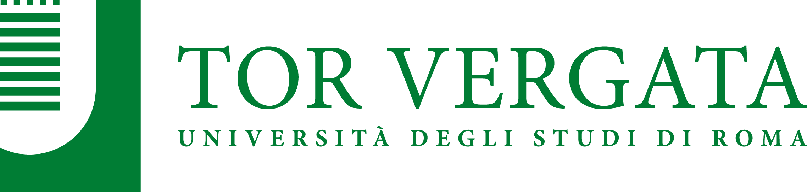

Studio in corso · Roma
Active study · Rome
Benessere mentale degli adolescenti a Roma
Adolescent Mental Well-being in Rome
EcoPsy è il primo grande studio epidemiologico longitudinale sull'esperienza emotiva quotidiana degli adolescenti nell'area metropolitana di Roma, finanziato dal Fondo Italiano per la Scienza (FIS–MUR).
EcoPsy is the first large-scale longitudinal epidemiological study on daily emotional experiences of adolescents in the metropolitan area of Rome, funded by the Italian Fund for Science (FIS–MUR).

15–18k
Studenti coinvolti
Students involved
3
Anni di raccolta dati
Years of data collection
174
Scuole nell'area metropolitana
Schools in the metro area
EMA
Valutazione ecologica momentanea
Ecological Momentary Assessment